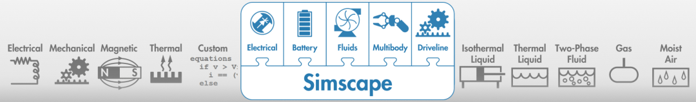

Physical Modeling
Simscape™ products enable you to model, optimize, and test physical systems. Model a physical system by connecting components from mechanical, hydraulic, electric, pneumatic, and thermal domains into a network. You can also create custom components by using the Simscape language. With Simscape products, specialists in different domains can work together in a single simulation environment to optimize system-level performance and test control algorithms. You can also perform techniques such as deep learning and predictive maintenance by working with MATLAB® and Simulink®. To deploy models to other environments, including hardware-in-the-loop (HIL) systems, the Simscape products support code generation.

Products for Physical Modeling
Topics
Electronic and Mechatronic Systems
- Build and Simulate a Simple Circuit (Simscape Electrical)
Build a Simscape Electrical™ model and parameterize the blocks using datasheet values, run the model, and examine the results. - Modeling Analog Circuit Architectures, Mechatronic Systems, and Electrical Power Systems Using Simscape Electrical (Simscape Electrical)
Model mechatronic systems, analog circuit architectures, and single- and multi-phase electrical power systems that you can connect to networks in other Simscape domains. - Build Simple Model of Battery Pack in MATLAB and Simscape (Simscape Battery)
Create and build a Simscape system model of a battery pack with Simscape Battery™.
Fluid Systems
- Electric Vehicle Thermal Management (Simscape Fluids)
Model the thermal management system of a battery electric vehicle. - Modeling and Simulating Fluid Networks (Simscape Fluids)
Learn the basics of constructing a model in Simscape Fluids™. - Model an Isothermal Actuation System (Simscape Fluids)
Use isothermal components to model a simple actuation system.
Robotics
- Pick and Place Robot Using Forward and Inverse Kinematics (Simscape Multibody)
Model a delta robot performing a pick and place task. - Train Humanoid Walker (Simscape Multibody)
Model a humanoid robot using Simscape Multibody™ and train it using either a genetic algorithm (which requires a Global Optimization Toolbox license) or reinforcement learning (which requires Deep Learning Toolbox™ and Reinforcement Learning Toolbox™ licenses).
Vehicles
- Capabilities of Simscape Driveline Software (Simscape Driveline)
Learn about modeling drivetrains in the Simscape Driveline™ environment. - Complete Vehicle Model (Simscape Driveline)
Explore a model that includes an engine, a transmission, and drivetrain-wheel-road coupling. - Vehicle Dynamics - Car with Heave and Roll (Simscape Multibody)
Model vehicle dynamics using a vehicle model that has 14 degrees of freedom.
Virtual Test and Design Optimization
- Aircraft Fuel Supply System with Three Tanks (Simscape Fluids)
Model an aircraft fuel supply system consisting of three tanks and an engine. - Solar Power Inverter (Simscape Electrical)
Determine the efficiency of a single-stage solar inverter. - Power-Split Hybrid Transmission (Simscape Driveline)
This example shows the basic architecture of a power-split hybrid transmission.
Model Deployment
- Electric Vehicle Configured for HIL (Simscape Electrical)
Model an electric vehicle model suitable for Hardware-In-the-Loop (HIL) deployment. - Generate HDL Code for Simscape Models (HDL Coder)
Generate HDL code from Simscape switched linear models. - Hardware-in-the-Loop Implementation of Simscape Model on Speedgoat FPGA I/O Modules (HDL Coder)
Synthesize and generate FPGA bitstream from a Simscape half-wave rectifier model and deploy it onto a Speedgoat® FPGA I/O 334-325K target. - How Simscape Code Generation Differs from Simulink (Simscape)
Learn about Simscape code generation specifics.
Related Information
Featured Examples

Backhoe
Model a hydraulically actuated backhoe with closed-loop PID control.

Electrical Component Analysis for Hybrid and Electric Aircraft
Model for rapid exploration of design space in the hybrid and electric aircraft area and compare the results to design criteria.

Engine Cooling System
Model an engine cooling system with an oil cooling circuit.

Deploy Simscape Buck Converter Model to Speedgoat IO Module Using HDL Workflow Script
Deploy buck converter modeled in Simscape to Speedgoat IO modules using HDL Workflow script.

Modeling and Control of a Mars Rover
Models a mars rover performing a sample retrieval task using Simscape Multibody and Robotics System Toolbox. The rover follows a desired path on a rigid terrain surface, stops at the target location and uses its manipulator to pick and store a sample from the surface. It uses the following key features to model different aspects of the application:

Three-Phase Asynchronous Wind Turbine Generator
Model an induction machine used as a wind turbine generator.